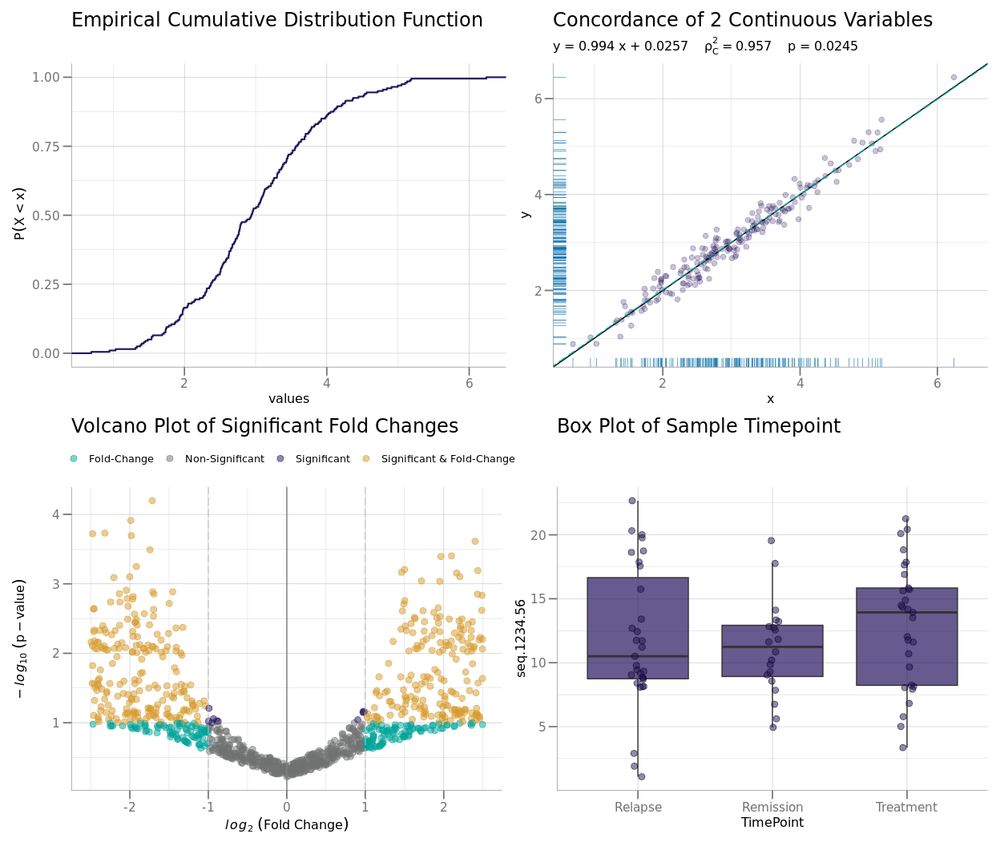
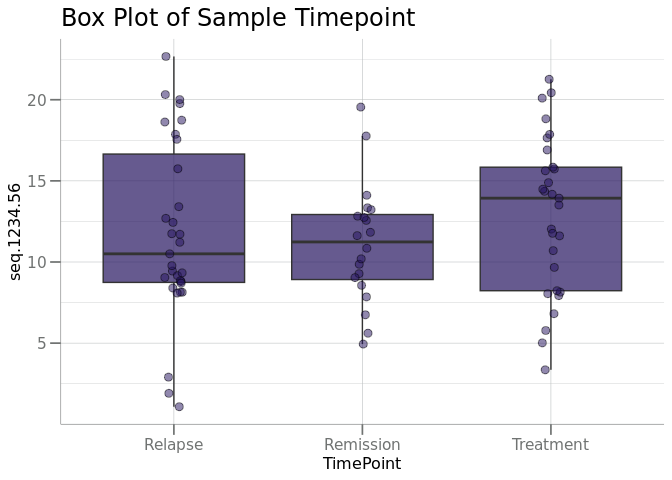
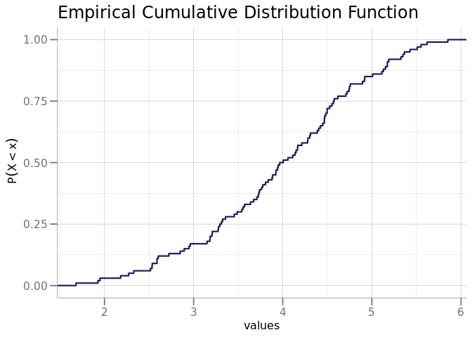
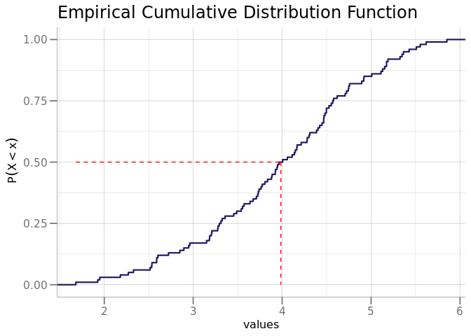
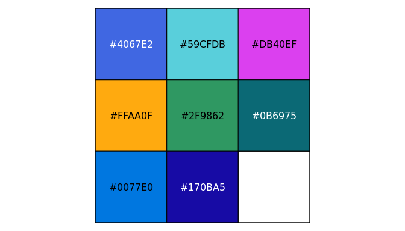
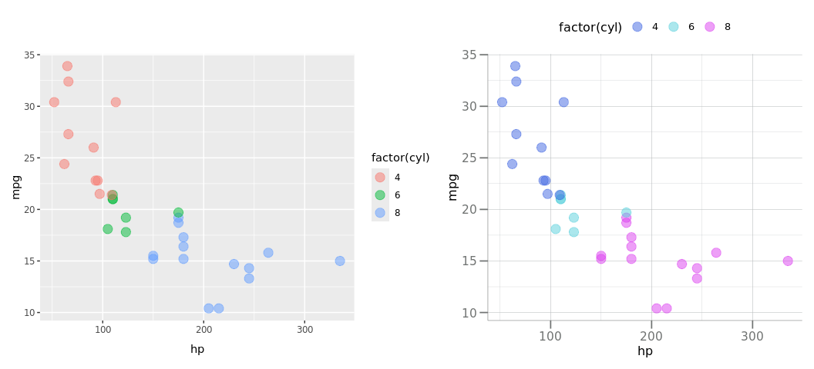

Overview
The SomaPlotr R package contains various standardized plotting functions designed to visualize SomaScan data in the R statistical environment. SomaPlotr is based on the “Grammar of Graphics” (Wilkinson, 2005), the same layered framework of mapping variables to aesthetics that provides a structure for ggplot2. As such, SomaPlotr largely utilizes ggplot-style syntax, and can easily and quickly create fully labeled, colored figures of SomaScan data.
SomaPlotr is designed to generate figures that are well-suited for the exploration and visualization of SomaScan data. SomaPlotr is therefore biased towards cumulative distribution function (CDF) plots, probability density function (PDF) plots, volcano and concordance plots, grouped boxplots, and more.

Keep reading (in the Examples section below) to see how these graphics can be generated using functions in SomaPlotr.
For a full table of the visualizations that can be created with SomaPlotr, see the Usage section below. For additional examples and details, see the package vignette (vignette("SomaPlotr")).
Installation
SomaPlotr can be installed from GitHub using the remotes package as follows:
remotes::install_github("SomaLogic/SomaPlotr")Usage
To load SomaPlotr, simply make a call to library():
SomaPlotr provides tools to create figures commonly used for the visualization of SomaScan data. While the package does not include a comprehensive list of all possible graphics, those that it does contain are popular for exploring and analyzing patterns in SomaScan.
Primary Functionality
The table below provides a high-level summary of the graphics that can be created with SomaPlotr:
| Plot type | Description | Function(s) |
|---|---|---|
| CDF | Empirical cumulative distribution function |
plotCDF(), plotCDFlist(), plotCDFbyGroup()
|
| Probability density function |
plotPDF(), plotPDFlist(), plotCDFbyGroup()
|
|
| Volcano | Statistical significance vs. magnitude of fold change |
plotVolcano(), plotVolcanoHTML()
|
| Concordance | Correlation coefficients of values in numeric vectors x and y
|
plotConcord() |
| Histogram | Frequency distribution of numeric data | plotDoubleHist() |
| Boxplot | Locality, spread and skewness of numeric data via quartiles |
boxplotBeeswarm(), boxplotGrouped(), boxplotSubarray()
|
| Longitudinal | Graphical representation of numeric data over time, by subject (also called a “trace plot”) | plotLongitudinal() |
Examples
The plotting functions in SomaPlotr require a SomaScan dataset as input, and generate a complete, labeled figure that can be further customized and modified, if desired.
Using SomaPlotr, the previously shown boxplot comparing RFU values across groups can be generated via boxplotGrouped():
# Simulate an example dataset
timepoint <- c("Treatment", "Relapse", "Remission")
withr::with_seed(101, {
clin_df <- data.frame(
TimePoint = sample(timepoint, 80, replace = TRUE),
seq.1234.56 = stats::rnorm(80, mean = 12, sd = 5)
)
})
# Create grouped boxplot w/ customized title
boxplotGrouped(
clin_df,
y = "seq.1234.56",
group.var = "TimePoint",
beeswarm = TRUE,
main = "Box Plot of Sample Timepoint"
)
Similarly, we can replicate the CDF plot in the introductory figure above via plotCDF():

A quantile/percentile line (the red line in the figure below) can be added to an existing CDF plot via addCDFquantiles():
cdf + addCDFquantiles(x, col = "red")
For a more in-depth overview of the package and a full list of example plots, please see the package vignette: vignette("SomaPlotr").
Color Palettes
SomaPlotr provides color palettes that correspond to SomaLogic Operating Co., Inc. company color schemes:
scales::show_col(palette_soma(n = 8))
These palettes can be incorporated into figures in a variety of ways. The soma_colors and soma_colors2 objects provide individual hex colors for the SomaLogic color scheme. These objects can be used to transform the ggplot2 default color palette.
data.frame(x = seq_along(soma_colors2), y = seq_along(soma_colors2)) |>
ggplot(aes(x = x, y = y)) +
geom_bar(stat = "identity", fill = soma_colors2) +
scale_x_discrete(labels = names(soma_colors2)) +
theme(axis.title.y = element_blank(),
axis.text.y = element_blank(),
axis.ticks.y = element_blank())Themes
The theme_soma() theme and scale_color_soma() functions provide a uniform plotting and color scheme. By using the theme_soma() theme, polished, publication ready figures can be generated with consistent font sizes, backgrounds, legend positions, and more.
Below, the left plot (p1) was created with the mtcars data set, using all ggplot2 defaults. The right plot (p2) uses the same data set, but with the theme_soma() theme and scale_color_soma() color scale applied.
p1 <- ggplot(mtcars, aes(x = hp, y = mpg, color = factor(cyl))) +
geom_point(alpha = 0.5, size = 4)
p2 <- p1 +
theme_soma() +
scale_color_soma()
More detailed examples illustrating how to apply these themes can be found in the vignette("SomaPlotr", ). For a full list of available color scales and themes, see ?SomaPlotr::theme_soma.